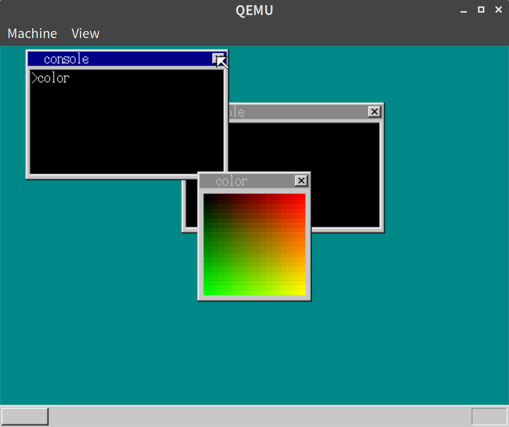
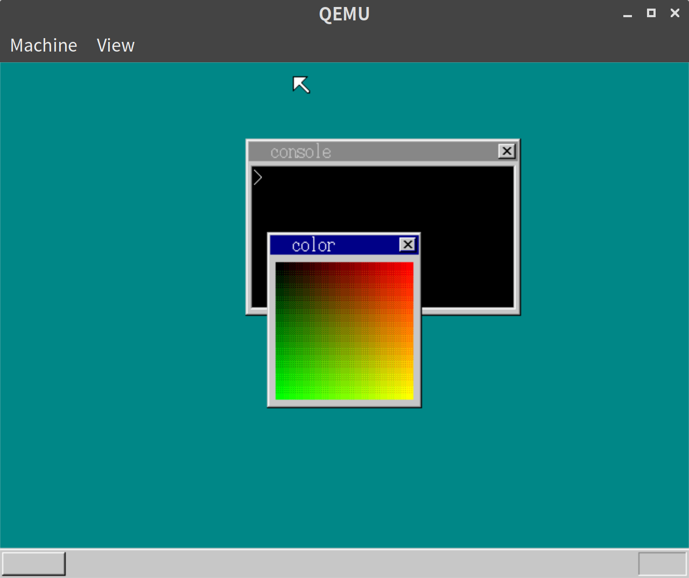
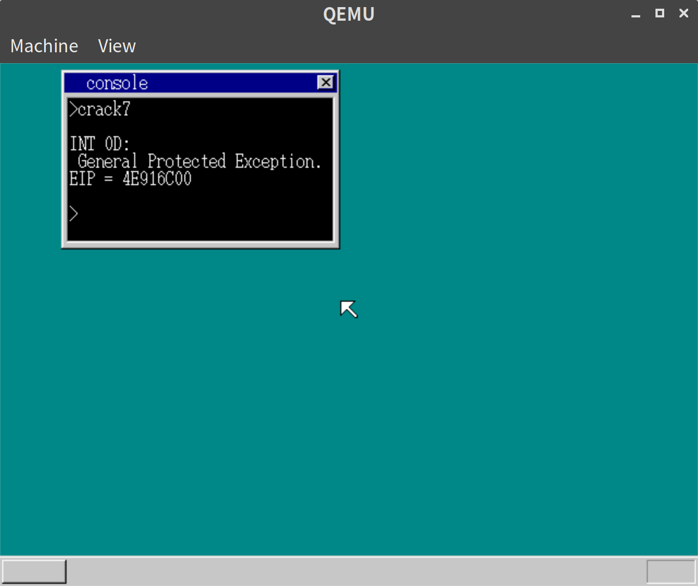

「30日でできる！OS自作入門」をRustで。27日目
Posted on 2019-08-13
「30日でできる！OS自作入門 」のC言語の部分をできるだけRustですすめてみる。今回は27日目の内容。
アプリケーション起動中でもコンソールを閉じられるようにする
表題の通り。
// lib.rs
pub const EXIT_ONLY_CONSOLE_OFFSET: usize = 2024;
#[no_mangle]
#[start]
pub extern "C" fn hrmain() {
// 省略
} else if EXIT_ONLY_CONSOLE_OFFSET as u32 <= i && i < 2280 {
let free_sheet_index = i as usize - EXIT_ONLY_CONSOLE_OFFSET;
let free_sheet = sheet_manager.sheets_data[free_sheet_index];
memman.free_4k(free_sheet.buf_addr as u32, 256 * 165).unwrap();
sheet_manager.free(free_sheet_index);
}
// 省略
}task_aのfifoにsheet_indexに2024を足したものを送ることで、コンソールのみの終了ができるようにする。
#[no_mangle]
pub extern "C" fn hrb_api(/* 省略 */) {
// 省略
} else if i == 4 {
TIMER_MANAGER.lock().cancel(console.timer_index);
cli();
let task_a_fifo_addr = unsafe { *(TASK_A_FIFO_ADDR as *const usize) };
let task_a_fifo = unsafe { &mut *(task_a_fifo_addr as *mut Fifo) };
task_a_fifo.put(console.sheet_index as u32 + EXIT_ONLY_CONSOLE_OFFSET as u32).unwrap();
console.sheet_index = 0;
sti();
// 省略
}その他細かい修正があるが、ここでは記載しない。
実行結果
以下の通り、コンソールのみ終了することができるようになった。
 
LDTの設定
現状、アプリからOSのセグメントは書き換えられないが、アプリ同士だと書き換えることができてしまう。
本のcrack7.hrbを実行すると確かに画面表示がおかしくなった。
これを防ぐため、LDT(Local Descriptor Table)を導入する。
// descriptor_table.rs
pub const AR_LDT: i32 = 0x0082;// mt.rs
#[repr(C)]
#[derive(Debug, Clone, Copy)]
pub struct Task {
pub select: i32,
pub flag: TaskFlag,
pub level: usize,
pub priority: i32,
pub tss: TSS,
pub fifo_addr: usize,
pub console_addr: usize,
pub ds_base: usize,
pub console_stack: usize,
pub ldt: [SegmentDescriptor; 2], // <- 追加
}
impl Task {
fn new() -> Task {
Task {
select: 0,
flag: TaskFlag::AVAILABLE,
level: 0,
priority: 2,
tss: Default::default(),
fifo_addr: 0,
console_addr: 0,
ds_base: 0,
console_stack: 0,
// 追加
ldt: [
SegmentDescriptor::new(0, 0, 0),
SegmentDescriptor::new(0, 0, 0),
],
}
}
}
impl TaskManager {
// 省略
pub fn init(&mut self, memman: &mut MemMan, fifo_addr: usize) -> Result<usize, &'static str> {
for i in 0..MAX_TASKS {
let mut task = &mut self.tasks_data[i];
task.select = (TASK_GDT0 + i as i32) * 8;
task.tss.ldtr = (TASK_GDT0 + MAX_TASKS as i32 + i as i32) * 8;
let gdt =
unsafe { &mut *((ADR_GDT + (TASK_GDT0 + i as i32) * 8) as *mut SegmentDescriptor) };
*gdt = SegmentDescriptor::new(103, &(task.tss) as *const TSS as i32, AR_TSS32);
// LDT用の場所をGDTに登録する
let ldt = unsafe {
&mut *((ADR_GDT + (TASK_GDT0 + MAX_TASKS as i32 + i as i32) * 8)
as *mut SegmentDescriptor)
};
*ldt = SegmentDescriptor::new(15, task.ldt.as_ptr() as i32, AR_LDT);
}
// 省略// console.rs
impl Console {
pub fn cmd_app<'a>(&mut self, filename: &'a [u8], fat: &[u32; MAX_FAT]) {
// 省略
{
let mut task = &mut task_manager.tasks_data[task_index];
task.ds_base = app_mem_addr;
task.ldt[0] = SegmentDescriptor::new(
finfo.size - 1,
content_addr as i32,
AR_CODE32_ER + 0x60,
);
task.ldt[1] = SegmentDescriptor::new(
segment_size as u32 - 1,
app_mem_addr as i32,
AR_DATA32_RW + 0x60,
);
}
for i in 0..data_size {
let app_ptr = unsafe { &mut *((app_mem_addr + esp + i) as *mut u8) };
*app_ptr = unsafe { *((content_addr + content_data_addr + i) as *const u8) };
}
}
}
if app_eip > 0 {
let task = &task_manager.tasks_data[task_index];
let esp0_addr = unsafe { &(task.tss.esp0) } as *const i32 as usize;
unsafe {
_start_app(app_eip, 0 * 8 + 4, esp as i32, 1 * 8 + 4, esp0_addr as i32);
}
// 省略
}
}実行結果
以下の通り、crack7.hrbを実行するとエラーになるようになった。

セグメントサイズが足りないのでふやす
アプリケーション用のセグメントサイズが足りず、オーバーフローして変な挙動をしていたので、kernel.ldを修正した。
/* kernel.ld */
/* 省略 */
ENTRY(hrmain)
/*出力フォーマット*/
OUTPUT_FORMAT("binary")
/*セクション*/
SECTIONS{
/*.hrbオブジェクトファイルのフォーマットに従い、ヘッダを定義*/
.head 0x0 :
{
LONG((ADDR(.bss) + SIZEOF(.bss) + 0xfff + 0xe000) & ~ 0xfff) /* 0xe000を追加 */
/* 省略 */本では、27日目の残りの部分はコードの整理がメインとなる。
Rustで書いているため、若干構成が異なり、あまり参考にならないので、この辺りは飛ばすことにした。
27日目は以上となる。ここまでの内容のコードはyoshitsugu/hariboteos_in_rustのday27としてタグを打ってある。